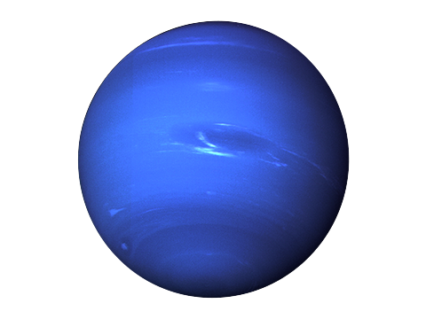

Here is our website for the end of year project. The goal is to model the trajectory of the solar system’s planets. We used the Euler and asymmetric Euler methods. Calculations are performed using functions coded in C language and modeling is done with JavaScript. The website is made in HTML and CSS. We have set up checkboxes to display the planets around the sun and the possibility of displaying the planets on a date of our choice between January 1, 2000 and December 31, 2020 using the calendar.
- Mercury
- Venus
- Earth
- Mars
- Jupiter
- Saturn
- Uranus
- Neptune

• Telluric planet
• Presence of ice at the pole
• Almost non-existent of atmosphere, except the presence of traces of gas
• Very large temperature difference (from -172degC to 427degC)
• orbital period of 88 earth days
• rotation period of 58,7 earth hours
• Telluric planet
• Relief that has many mountains, canyons, volcanoes and is riddled with craters
• No trace of water
• Atmosphere mainly composed of carbon dioxide(CO2) but also nitrogen (N2), sulfur dioxide (S2) and sulfuric acid (H2S)
• very important greenhouse effect
• 453degC degree average temperature
• orbital period of 224,7 earth days
• rotation period of 243 earth days
• Telluric planet
• soil rich in mineral salts
• large amount of water
• presence of life
• Atmosphere composed of nitrogen (N2), oxygen (O2), argon (Ar), carbon dioxide(CO2), water vapour (H2O) and other gases
• temperature varying between -60degC et 45degC
• orbital period of 365,25 earth days
• rotation period of 24 earth hours
• One natural satellite : moon

• Telluric planet
• Very accentuated relief and presence of numerous craters
• Presence of ice at the pole
• Atmosphere mainly composed of carbon dioxide (CO2), but also nitrogen (N2),argon (Ar) and even oxygen (O2);
• Relatively large temperature differences (from-123degC to 37degC)
• Presence of violent wind
• orbital period of 687 earth days
• rotation period of 24,63 earth hours
• gaseous planet
• largest planet in the solar system
• No water trace
• Significant hydrogen atmosphere (H2) and helium (He) but also ammonia(NH3), methane (CH4) and ethane (C2H6);
• Temperature in the outer part of the clouds about -153degC
• Violent wind that can go up to 500 km/h
• orbital period of 11,87 earth years
• rotation period of 9,93 earth hours
• gaseous planet
• presence of thousands of colored rings that are made of ice and rock
• No water trace
• Significant hydrogen atmosphere (H2), helium (He), methane (CH4) and ammonia (NH3)
• Temperature in the outer part of the clouds about -185degC
• orbital period of 29,46 earth years
• rotation period of 10,66 earth hours
• gaseous planet
• described as an ice giant
• Presence of greenish gases forming an atmosphere of hydrogen (H2), helium (He)and methane (CH4)
• No water trace
• Temperature in the outer part of the clouds about -214degC
• orbital period of 84,3 earth years
• Rotation period of 17,2 earth hours

• gaseous planet
• Also described as an ice giant
• Presence of bluish gases forming a hydrogen atmosphere (H2), helium (He) and methane (CH4)
• No water trace
• Temperature in the outer part of the clouds about -225degC
• Violent wind that can go up to 2000 km/h
• orbital period of 164,8 earth years
• rotation period of 16,11 earth hours